Nascuts als barris de Badalona. Fets de bàsquet, de carrer i de comunitat. Cataloguem les pistes, denunciem el seu estat i exigim a les institucions que les mantinguin i n'obrin de noves. Perquè en una ciutat que es fa dir "Badalona, ciutat del bàsquet", les pistes de barri han d'estar en forma.
✓
Associació Oficial Registrada
Reconeguda per la Generalitat de Catalunya · 19 de maig de 2026
Inscrita a la Secció 1a del Registre d'Associacions de la Generalitat de Catalunya. Entitat sense ànim de lucre amb seu a Carrer de Sant Josep Oriol, 2 · Badalona. NIF: G88931019 Fundada el 16 d'agost de 2022
01
Missió
Recuperar i cuidar les pistes de barri per fer un bàsquet de carrer
viu, creatiu i respectuós, on totes les edats juguin en igualtat.
Treballem perquè les institucions assumeixin el manteniment i reconeguin
el valor educatiu de l'espai públic.
02
Visió
Una Badalona on les pistes urbanes siguin espais vius i cuidats,
integrats al dia a dia dels barris. Una ciutat que lideri el bàsquet
de carrer i el converteixi en símbol d'identitat compartida.
03
Valors
Bàsquet sense barreres econòmiques, socials ni físiques. Pistes
obertes, gratuïtes i accessibles per a tothom: amb rampes, espais
adaptats i portes obertes a totes les capacitats. Una trobada
intergeneracional i inclusiva on cada persona, sigui com sigui,
té el seu lloc a la pista.
Fites aconseguides
Reunió institucional
L'Ajuntament accepta seure a parlar del manteniment de les pistes públiques.
📷 Veure foto →
Moció aprovada per unanimitat
El Ple de l'Ajuntament aprova per unanimitat la moció de suport a Juguem a Bàsquet: diagnòstic, pressupost, 4 noves pistes i traspàs al departament d'esports. Llegir notícia →
Informe de catalogació
+40 pistes de tota Badalona analitzades, documentades i publicades.
Properes fites en marxa
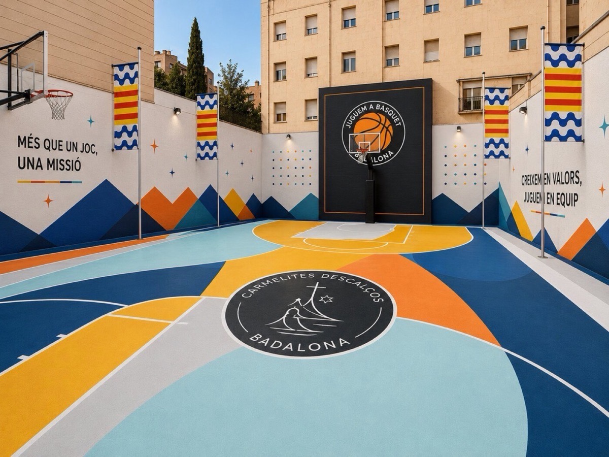
Projecte estrella · Badalona Centre
La pista dels Carmelites Descalços
✦ Visió · Com volem que quedi
📍 Carrer del Mar, 47 · Badalona
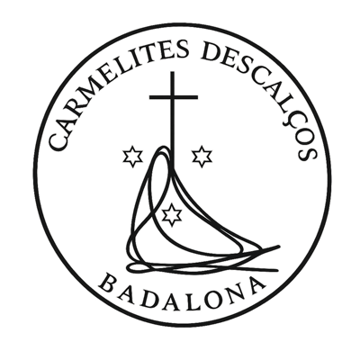
Els Pares Carmelites Descalços de Badalona ens han cedit la seva pista uns dies a la setmana. Nosaltres ens encarreguem del manteniment i la millorem entre tots.
Més que una pista: un espai obert a tothom, amb especial atenció a persones amb mobilitat reduïda, diversitat funcional i col·lectius en situació de vulnerabilitat.
♿ Accessibilitat🧠 Diversitat funcional🤝 Inclusió social📍 Carrer del Mar, 47
🏀 Torneig 3x3 · Properament
Data per confirmar
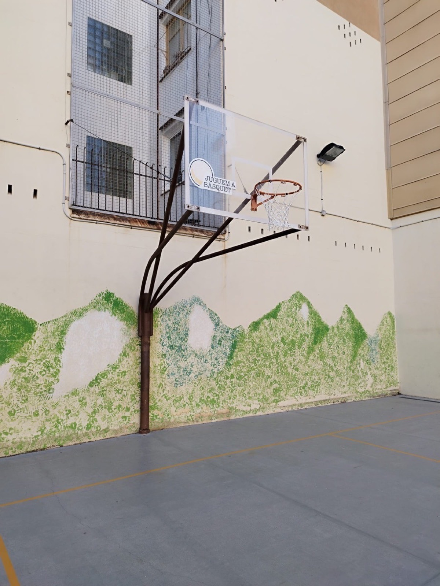
Estat actual
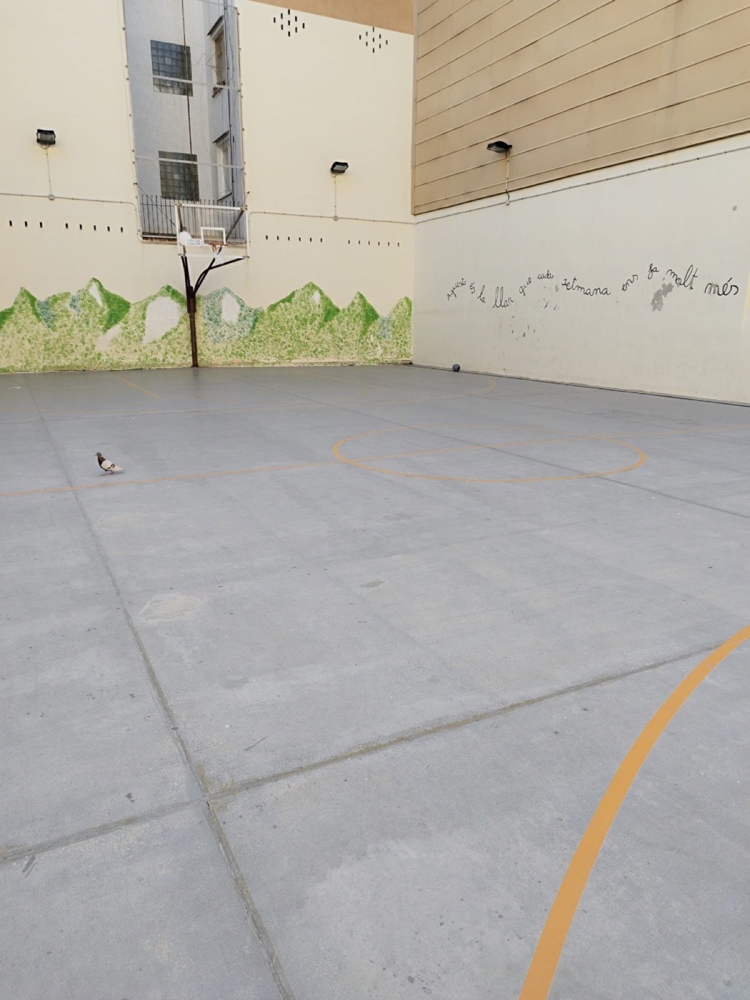
Estat actual
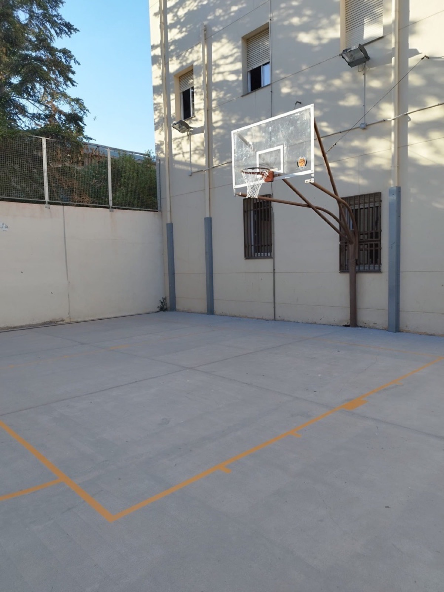
Estat actual
Com pots col·laborar?
01
Fes difusió
Comparteix el projecte a les xarxes socials, explica'l al teu entorn i ajuda'ns a créixer. Cada compartició ens obre noves portes.
02
Fes de voluntari/a
Necessitem mans per pintar, millorar i dinamitzar la pista. Si tens temps i ganes, ets benvingut/da. Escriu-nos i t'expliquem com sumar-te.
03
Suport econòmic
Cada aportació va directament a la millora de la pista: pintura, cistelles, accessibilitat. Si vols contribuir, posa't en contacte amb nosaltres i t'expliquem com fer-ho.
Vols sumar-te al projecte dels Carmelites? Fes la teva aportació a la campanya de finançament col·lectiu i ajuda'ns a convertir aquesta pista en un espai per a tothom.
Activitats i projectes
Quefem …
Renovació de pistes, exposicions, actes de reconeixement, taules rodones i acció
directa per posar el bàsquet de carrer al centre de la ciutat.
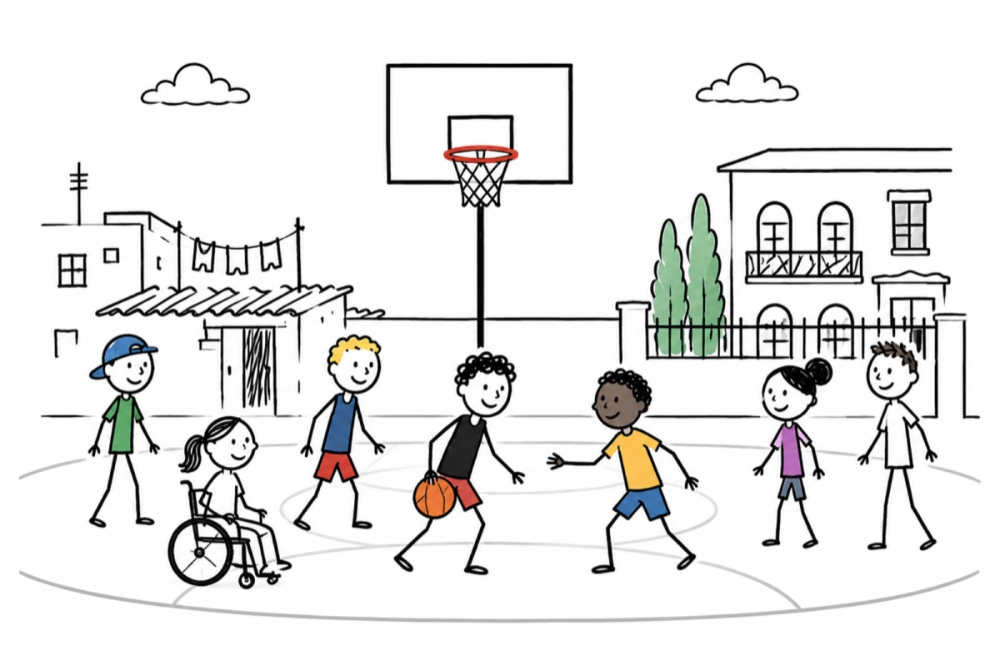
Bàsquet per a Tothom
Perquè el bàsquet no entén de barreres. Impulsem el bàsquet adaptat com a eina d'inclusió i vida — perquè qualsevol persona, amb qualsevol capacitat física o intel·lectual, pugui jugar amb dignitat, igualtat i alegria. Sense excepcions.
♿
Pistes accessibles
Promovem que totes les pistes de bàsquet de barri tinguin accés fàcil per a cadires de rodes: rampes, superfícies planes i espais adaptats perquè ningú es quedi a fora.
🏀
Classes gratuïtes
Impulsem sessions de bàsquet gratuïtes per a persones amb diversitat intel·lectual. Un espai de joc, d'equip i de vida on cada persona brilla al seu ritme.
Ambaixador Honorífic
Associació Juguem a Bàsquet · Badalona
Exposició de samarretes històriques
Acte especial de reconeixement al fotoperiodista badaloní M.A. "Miqui" Forniés, amb el descobriment de la placa de la pista de bàsquet que durà el seu nom. Exposició gentilesa de Josep Zamorano i xerrada-taula rodona amb Miqui Forniés, Artur Grau i dos convidats especials. Diumenge gran amb activitat familiar.
Activitats Infantils de Bàsquet · Festes Iris-Sol-Casagemes
Matí de festa al barri amb activitats infantils de bàsquet al carrer, tallers, tómbola i música. Pl. Mateu Rotger, Badalona.
InfantilBarriGratuït
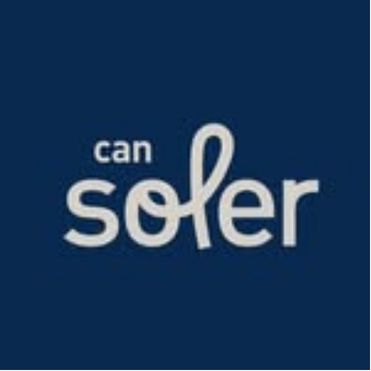
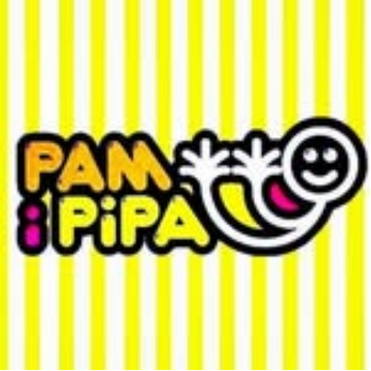
Finançament col·lectiu · Una pista per a tothom
Col·labora amb un projecte quecanvia vides
Volem construir una pista coberta de bàsquet a Badalona: un espai on tothom pugui jugar amb dignitat. Persones amb mobilitat reduïda, persones amb diversitat intel·lectual, famílies amb pocs recursos. Gratuïta, adaptada i oberta a tota la comunitat. I volem crear el primer equip de bàsquet adaptat de Badalona.
0 €
recaptats
— €
objectiu
40
dies de campanya
0
col·laboradors
0% aconseguit · Campanya pròximament
La campanya s'obre aviat. Segueix-nos a @juguemabasquet per ser el primer en saber-ho.
🎵 Himne Oficial
Juguem a Bàsquet — Som Família
0:00
0:00—
Estrofa 1
Juguem a bàsquet, som família.
Un mateix batec, un sol camí.
Des de Badalona fins al futur.
Quan juguem units, res ens fa por.
Estrofa 2
Juguem a bàsquet, la nostra força.
Respectem la participació.
Cada pista és casa nostra.
Cada nit porta un somni al cor.
Pont
No importa el marcador,
si deixem l'ànima al parquet,
perquè els valors que defensem
duren molt més que un partit.
Estrofa 3
Carmelites ens acompanya.
El bàsquet ens fa créixer més.
I cada veu que avui ens anima.
Fa aquest somni encara més gran.
Cor
Som memòries, som futur,
som bàsquet per tothom.
Som una ciutat que mai s'atura.
Un sentiment que ens uneix.
Estrofa 4
Juguem a bàsquet, Badalona.
Tots, no hi ha cap límit més.
Ens tornen força i amb il·lusió.
Sempre endavant, sempre de nou.
Final
Juguem a bàsquet, Badalona.
Aquesta és la nostra veu.
Som família, som un equip,
i avui, sempre, fins al cel.
El teu suport en acció
5 €
Equipament esportiu per a algú que mai ha pogut permetre's jugar
25 €
Una sessió completa d'entrenament adaptat amb entrenador professional
100 €
Un mes de classes gratuïtes per a una persona o família vulnerable
500 €
Un pas real cap a la construcció de la pista coberta inclusiva
Recompenses per als mecenes
5 €
Mecenes solidari
El teu nom a la nostra pàgina de col·laboradors i agraïment públic a xarxes socials.
25 €
Clauer JAB
El teu nom a la pàgina de col·laboradors + clauer oficial de Juguem a Bàsquet.
100 €
Camiseta JAB
El teu nom a la pàgina de col·laboradors + camiseta oficial de Juguem a Bàsquet.
500 €
Pack Mecenes
El teu nom a la pàgina de col·laboradors + clauer + camiseta + gorra oficials de Juguem a Bàsquet.
Entrevistes
Veus delbàsquet
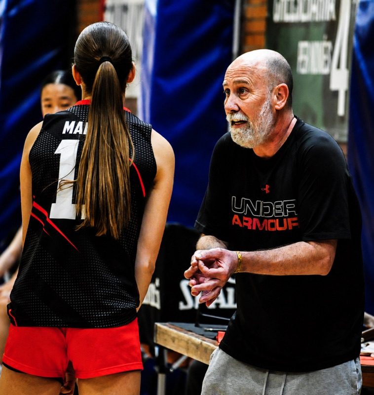
Foto pendent
Entrevista · Juny 2025
David Busquets
Entrenador de bàsquet base · Més de 20 anys d'experiència · Badalona
Parlem amb un entrenador que ha dedicat més de vint anys a formar persones a través del bàsquet
a Badalona. En David reflexiona sobre la tasca invisible dels entrenadors, el paper imprescindible
de les famílies i per què un marcador dura un dia mentre els valors duren tota la vida.
Format
Entrevista escrita
Preguntes
18 preguntes
FormacióValorsBadalonaEntrenadors
Per a mi, el bàsquet de Badalona és molt més que un esport. És una escola de vida. M'ha fet créixer com a entrenador i, sobretot, com a persona. Cada equip m'ha deixat un aprenentatge i cada jugador m'ha recordat que darrere de cada samarreta hi ha una història. Si he pogut ajudar algun nen o nena a confiar més en ell mateix, ja em dono per satisfet.
Sí, però cal cuidar-la. La història ens dona orgull, però el futur dependrà de com cuidem els nostres clubs, entrenadors i famílies. El bressol no es conserva només amb records; es construeix cada tarda als pavellons.
Recordar que formem persones abans que jugadors. Guanyar és bonic, però educar és el que deixa empremta.
En alguns casos sí. Els nens no haurien de sentir la pressió que sovint sentim els adults. Un marcador dura un dia; els valors duren tota la vida.
Respecte, esforç, compromís, treball en equip i humilitat. El bàsquet ens ensenya que ningú guanya sol.
No sempre. Hi ha moltes hores invisibles: preparar entrenaments, parlar amb famílies, formar-se i acompanyar els jugadors. Aquesta feina mereix més reconeixement.
Crec que no reflecteix la responsabilitat ni el temps dedicat. Molts entrenadors continuen per vocació, però la vocació també s'ha de cuidar.
Els clubs haurien de cuidar més els seus entrenadors. Un entrenador valorat transmet il·lusió, i aquesta il·lusió arriba als jugadors.
Perquè la responsabilitat és gran i el reconeixement, sovint, petit. Cal fer atractiva aquesta tasca i donar suport als qui la fan.
Han millorat, però encara hi ha camí. Els entrenadors també necessiten sentir-se escoltats i acompanyats.
Sí. La salut emocional és tan important com la tècnica. Un professional pot ajudar jugadors, entrenadors i famílies a gestionar pressió, frustració i conflictes.
És aprendre a aixecar-se després d'una derrota. El bàsquet és una gran escola perquè cada error és una oportunitat per créixer.
No prou. Protegim massa els infants. Aprendre a perdre amb dignitat és imprescindible per saber guanyar amb humilitat.
Fonamental. El millor regal després d'un partit és una abraçada i un "m'ha agradat veure't gaudir". Els fills necessiten sentir-se estimats, no examinats.
Més suport als entrenadors, més educació en valors i més coordinació entre clubs per posar els infants al centre.
No deixis mai de formar-te, però sobretot no deixis mai d'escoltar. Els jugadors recordaran més com els vas fer sentir que no pas els sistemes de joc.
Que hi havia un entrenador que creia en ells, que els respectava i que els va demostrar que el bàsquet és una excusa meravellosa per aprendre a viure.
Continueu apostant pels valors. Els clubs no només formen esportistes; formen persones. Quan posem la persona al centre, el bàsquet guanya sempre.
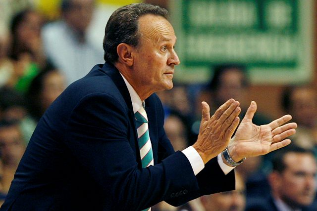
Foto pendent
Entrevista exclusiva · Gener 2025
Aíto García Reneses
Entrenador de baloncesto · Més de 50 anys d'experiència · JJOO Pekín 2008
Parlem amb un dels entrenadors més influents de la història del bàsquet espanyol.
Aíto ens parla de talent, error, formació i per què el bàsquet és molt més que un marcador.
Entrevista realitzada per Ramon Gargallo.
Bueno, se presionaba menos, se corría menos. Actualmente jugar tantos partidos al año es complicado, además hoy en día hay muchas interrupciones, más partidos con la selección.
A parte de lo comentado antes, ha ganado en intensidad, aunque se han perdido otras cosas. En Euroliga se ve claramente, ya que todo es más automatizado.
Se entrena poco. Cuando entrenaba al Alba de Berlín, y al saber que no ganaríamos el torneo, utilizamos los avances de la semana para aprovechar y aplicar lo entrenado.
El basket en la calle hace que los jugadores sean más «pillos». Entrenaban igual un 3x3 que un 2x2, siendo totalmente alegres.
Sí, claro que ha habido. Sobre todo en las improvisaciones. Ricky por ejemplo me sorprendió muchísimo. Superaba con creces cada acción que le mandaba, una visión increíble. Hoy es diferente, ya que la táctica manda.
Un buen jugador es aquel que a base de entrenos y entendimiento va creciendo. Un jugador especial, con talento, sabe improvisar en cada jugada que ve del equipo, al compañero.
Yo era de ésos. Empecé en el Ramiro de Maeztu con los minis, haciendo cursillos, aprendiendo mucho. Del Estudiantes fui al Barça con Ignacio, como ayudante, el cual me dio mucha libertad. Fue fantástico para mí.
Hay que divertirse, y dejar de pensar en el error.
No. El liderazgo se demuestra enseñando a los demás, que aprendan y ayudar a que los jugadores sean mejores día a día.
Hoy lo miro más por TV. Más o menos todos los equipos plantean lo mismo: bloqueos en ataque, bloqueos medios en la zona; ya no se juega con un interior puro. Me gustaría añadir que los jugadores son más físicos y estaría bien ensanchar el campo, alejar la línea de 3.
El que tiene talento lo hace. El entrenador lo sabe y debe ayudar a eso. Igual que el jugador, también debe ayudar.
Sin duda los JJOO de Pekín, donde pusimos en serios aprietos a toda una selección USA.
Es fantástico. Mucho mejor que confíe. Pero la confianza se ha de ganar y demostrar.
Actualmente hay muy pocos que confíen. Ni los jugadores en los clubs, movidos por los dólares de las universidades americanas, donde van a ganar dinero aunque a estudiar poco. Hoy es muy difícil competir solo por dinero.
Mi pasado en el Estudiantes me enseñó mucho, además en la Selección aprendiendo con Antonio Díaz Miguel y aportando poco a poco mi granito de arena.
Sobre todo, formarlos técnicamente y personalmente en varios aspectos, tanto en el equipo como más allá del equipo.
Simplemente, enseñar a jugar.
Es imprescindible seguir vinculado, pero también hacia otras cosas. Estudié físicas y telecos, y en mi tiempo gestioné baloncesto y estudios al mismo tiempo.
Creo que se nutre de muchas influencias.
Que se diviertan, que mejoren la técnica, el físico, y sobre todo, el intelecto.
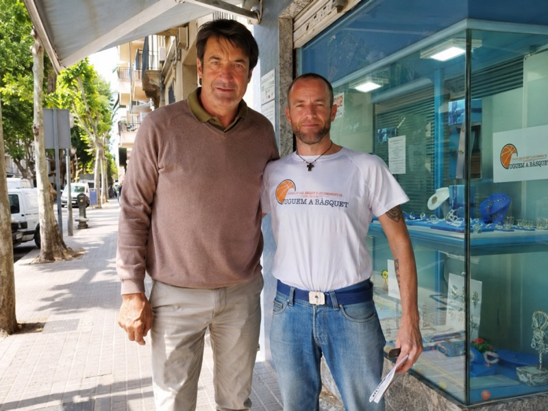
Foto pendent
Entrevista · Primera JAB · Arxiu
Jordi Villacampa
Jugador i President del Club Joventut Badalona · 40 anys vinculat al club · Llegenda del bàsquet català
Jordi Villacampa és un referent a Badalona, tant com a jugador i com a president en les seves
respectives èpoques, del club que porta el nom de Badalona. Durant quaranta anys ha estat vinculat
a la Joventut. Va ser admirat per molts i moltes, protagonista a les carpetes escolars i sobretot
ha enamorat la seva forma de ser.
Format
Entrevista escrita
Preguntes
4 preguntes
LlegendaJoventutBadalonaPistes de carrer
Bon dia, sí, continuo connectat al bàsquet, ha sigut la meva vida durant quaranta anys en actiu. Aquest any he estat a la copa del Rei de Màlaga i he gaudit molt, segueixo a la Penya i tot el que l'envolta, evidentment. També m'agrada molt veure a la gent jugar als parcs divertint-se, però sobretot m'agrada que el bàsquet sigui un lloc d'integració i un esport social.
Badalona té una tradició brutal de fa molts anys. Pensa que la Penya va néixer el 1930 i no només la Penya, sinó tot el que envolta aquest club referent. Va haver anys que hi havia tres equips badalonins a primera divisió i hem de valorar la nostra potència com a ciutat, la qual no hauríem de perdre i sí rendibilitzar més. Com viatjo sovint, veig com ens estimen, ens valoren i s'adonen més de la nostra importància que els que vivim aquí. Per la gent de fora, Badalona és un referent del bàsquet, no sé si som capital europea però sí un punt de referència molt important a seguir.
Jo vaig començar a jugar al carrer, tinc molt bon record, les pistes de quitrà, els bàsquets de mini... m'ho passava millor jugant un contra un, dos contra dos, exercicis de llançament amb els meus amics, allà és on aprens els fonaments del bàsquet, sincerament, tinc molt bons records entranyables. Sempre em recordo de la pista d'amunt dels maristes al carrer dos de maig, a la terrassa. La pista era fantàstica, inclús quan era federat m'escapava per poder estar amb ells i jugar. És fonamental que encara existeixin aquestes pistes.
Sincerament, crec que fins ara, els diferents governs que han passat haurien d'haver cuidat les pistes. Les famílies, els nens i nenes, els amics i amigues... volen divertir-se, ja que és un mobiliari urbà, realment és una inversió i hi ha d'haver un manteniment diari. Aquí som una ciutat de bàsquet i hem de tenir unes cistelles dignes, per reflectir una bona imatge. Crec que el govern actual es posarà les piles i estarà mentalitzat per la gent que viu a Badalona, per un tema d'integració esportiva i social.
Mapa de pistes
Les pistes de Badalona,a un cop de vista
Hem catalogat les pistes públiques de bàsquet de Badalona i estem documentant l'estat de cadascuna: cistelles, xarxes, paviment, il·luminació. Clica un marcador per veure la fitxa o reportar una incidència. Aquesta és la nostra eina viva: el mapa creix amb les vostres aportacions.
La pista on vas jugar de petit mereix estar en forma.
Reporta l'estat d'una pista
Si saps d'una pista que no hi és, o vols denunciar el mal estat d'una pista (cistelles trencades, sense xarxa, paviment malmès…), envia'ns la info i fotos si en tens. La revisarem i la publicarem al mapa.
✓ Sempre amb el vist-i-plau de l'associació
—
Pistes al mapa
—
En bon estat
—
Estat regular
—
Necessiten millora
Vídeos
El bàsquet de carrer, enmoviment
Cròniques, denúncies i moments destacats. Tot el contingut prové del nostre Instagram @juguemabasquet.
Destacat · CrònicaActe Miqui Forniés
AccióCol·locació de xarxes · La Mora
InstitucionalIntervenció al Ple Municipal
DenúnciaPista sense cistella
Veure'n més
@juguemabasquet
→
Galeria i notícies
El bàsquet de carrer,en imatges
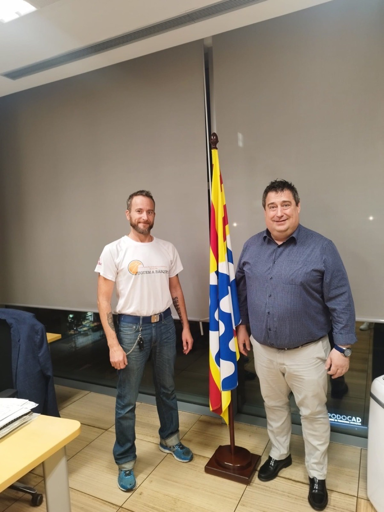
Reunió · Regidor Juan Portillo
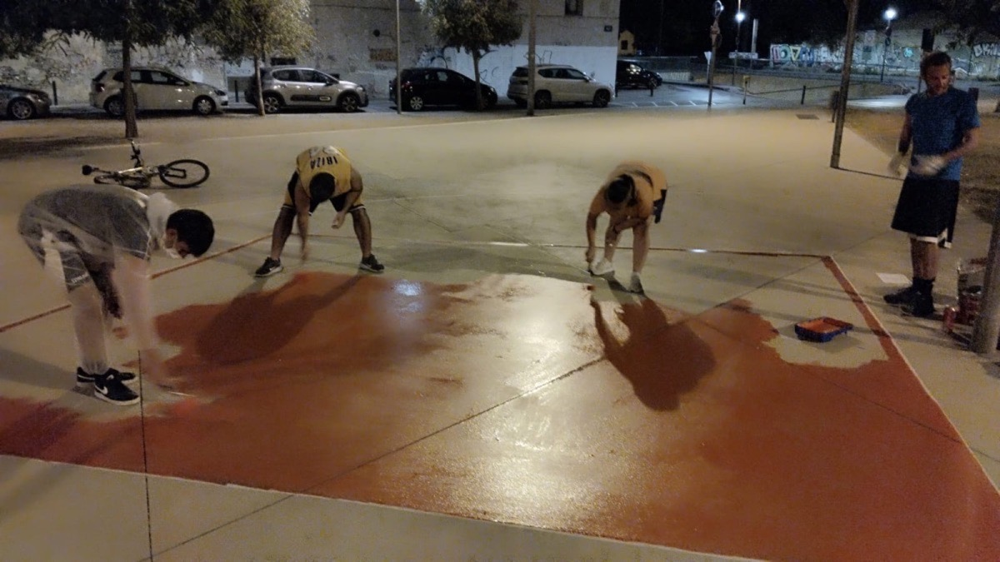
Pintada · Riera Canyadó
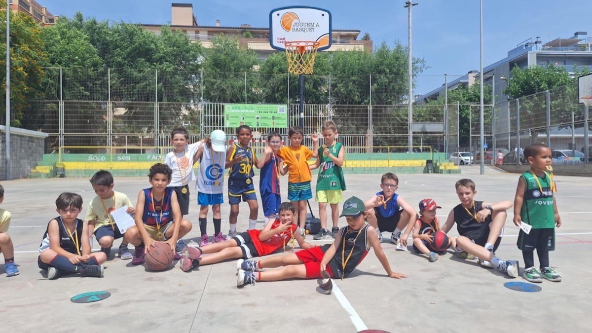
Activitat · Barri Casagemes
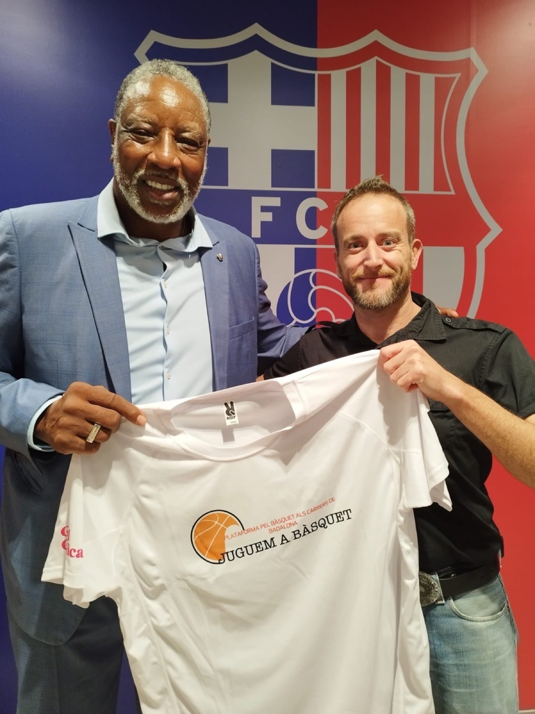
Audie Norris
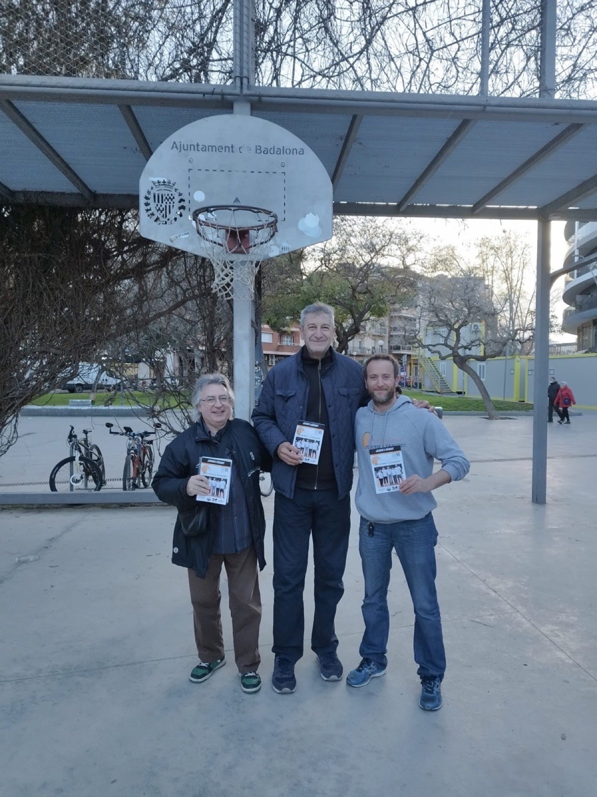
Andrés Jiménez
Jordi Villacampa
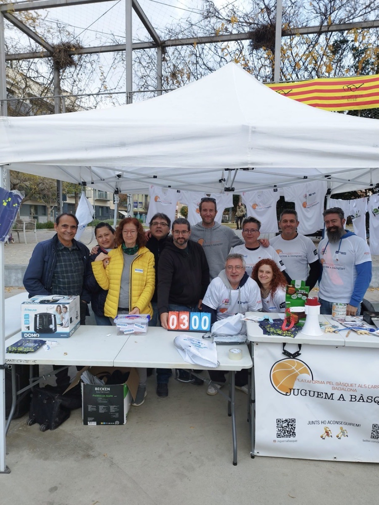
Marató TV3 · 2025
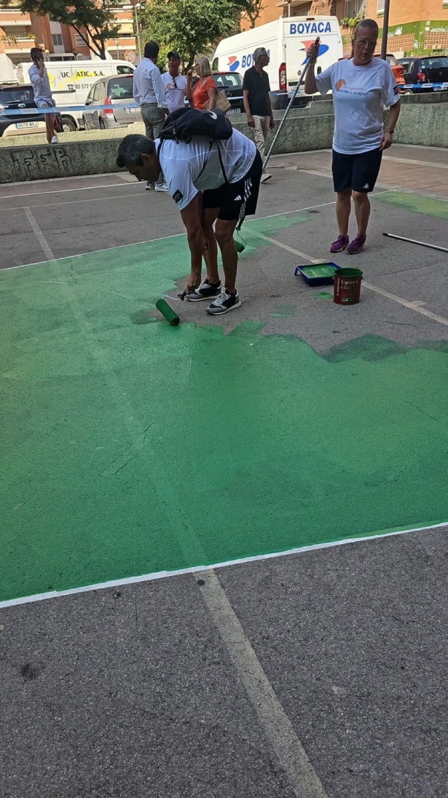
Pintada · Nova Lloreda Sud
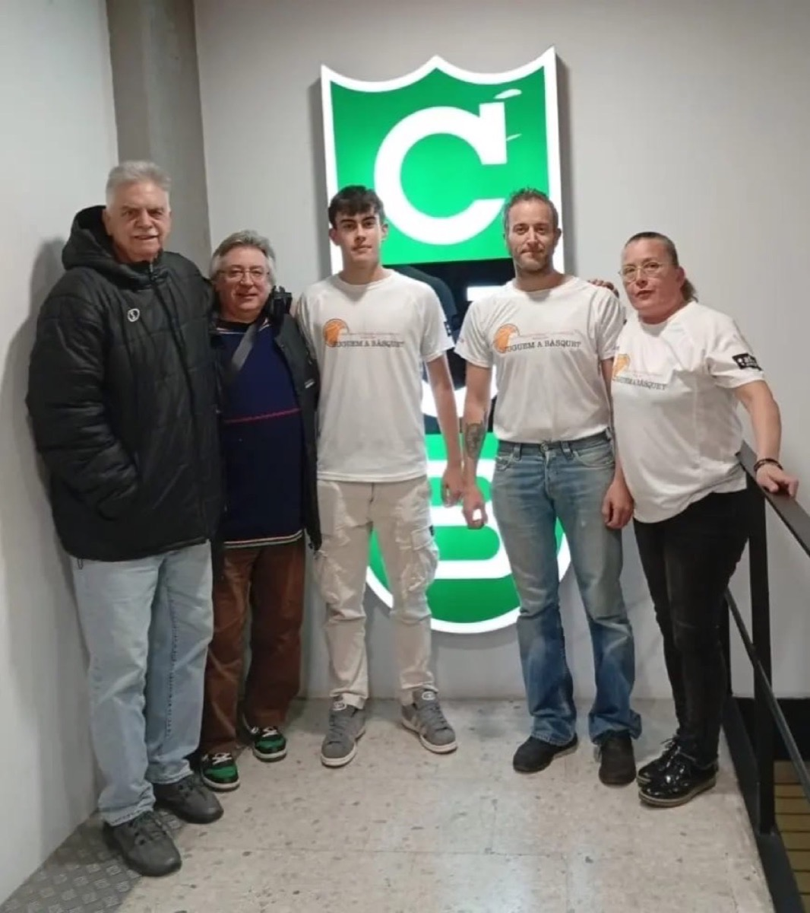
Reunió amb la Penya
Últimes notícies
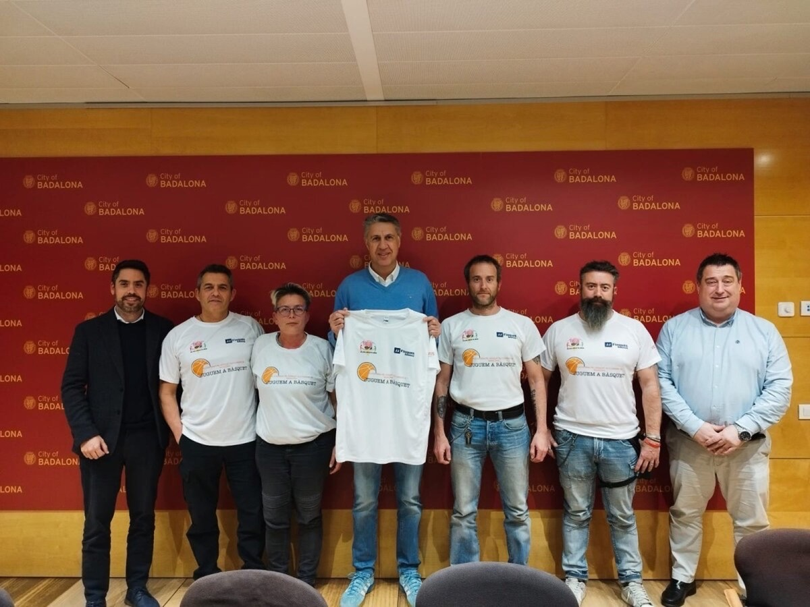
Reunió institucional · 2026
Trobada amb l'alcalde sobre el manteniment de les pistes públiques
Vam estar parlant sobre les mancances de les pistes públiques de Badalona
i el compromís de treballar conjuntament amb l'associació Juguem a Bàsquet
per recuperar-les i mantenir-les.
2 Novembre 2023 · Ple Municipal
El Ple aprova per unanimitat la moció de suport a Juguem a Bàsquet
Tots els grups municipals voten a favor: diagnòstic de pistes, pressupost 2024-2027, construcció de 4 noves pistes i traspàs al departament d'esports.
Llegir notícia a badalona.cat →
16 Maig 2026
Acte de reconeixement al fotoperiodista Miqui Forniés
Exposició de samarretes històriques i descoberta de la placa de la pista que durà el seu nom.
2026
Publiquem l'informe de catalogació de pistes
+40 pistes de Badalona analitzades. Estat, accés i propostes de millora.
Veure el llistat →
Presència digital
Tot el que fem, en un sol clic
Premsa, notícies, xarxes socials, vídeos, mencions... Busca'ns a Google i trobaràs tot el rastre digital de Juguem a Bàsquet. Sense perdre't res.
S'obrirà una nova pestanya amb tots els resultats de Juguem a Bàsquet
Patrimoni esportiu · Badalona
Arxiu Històricdel bàsquet
Badalona és molt més que un club. És una ciutat que respira bàsquet des dels anys 20 — als poliesportius, als patis de col·legi, als carrers i als barris. Aquí rescatem la memòria d'on venim.
📷
Miquel Àngel Forníes
Fotoperiodista · Assessor fotogràfic de l'arxiu
100+
Anys de bàsquet
1930
Fundació Joventut
1994
Campions Europa
∞
Clubs als barris
1
Ciutat · Badalona
01 —
CRONOLOGIA HISTÒRICA
📝Arxiu en construcció. Els moments marcats "Per documentar" esperen noms, dates i fotos reals. Si tens records, imatges o informació sobre el bàsquet antic de Badalona — necessitem la teva veu.
1920–1939Els PionersQuan el bàsquet era nou. Patis, places, roba de carrer. Sense pistes, sense pressupost. Pura passió i curiositat per un esport acabat d'arribar.
1925
1 de març de 1925 · El primer partit documentat
Al pati de l'Ateneu Obrer — avui Plaça Ernest Lluch — es juga el primer partit de bàsquet documentat a Badalona. Dos equips de sis jugadors cadascun (aleshores no eren cinc com avui): Equip Blanc: Camps, Mateu, Pich, Julià, Ribes i De Rique contra Equip Blau: Escanet, Adrià, Moles, Llorch, Cusí i Alonso. L'investigador Pep Solà Niubó ho va demostrar rastreant hemeroteques — convertint Badalona en el bressol del bàsquet català.
OrígensPlaça Ernest Lluch6 jugadorsPep Solà Niubó
1930
Fundació del Club Joventut Badalona · "La Penya"
Neix un dels clubs més emblemàtics de la història del bàsquet espanyol i europeu. El seu nom original era "Peña Spirit of Badalona" — en honor al "Spirit of Saint Louis", l'avió amb què Charles Lindbergh va creuar l'Atlàntic el 1927. Una fundació plena d'esperit aventurer. Dos anys abans, la Sociedad Gimnasia (1926–1932) ja havia incorporat el bàsquet a Badalona.
JoventutSpirit of BadalonaLindberghSociedad Gimnasia
1936–39
La Guerra Civil atura el bàsquet
La Guerra Civil interromp la vida esportiva. Les pistes queden buides. Molts jugadors marxen o no tornen. Una generació sencera de bàsquet badaloní es perd en el silenci de la guerra. Els noms d'aquells jugadors mereixen ser recordats i honorats.
Guerra CivilMemòriaPer documentar
1940–1965La ReconstruccióPostguerra i resiliència. Els clubs de barri tornen a créixer. Noves generacions descobreixen el bàsquet. La sembra que fertilitzaria l'arbre gran que vindria.
1940
La postguerra · Els clubs com a espai de convivència
Malgrat la duresa de la postguerra, el bàsquet torna als barris. Els clubs s'hi converteixen en veritables espais de convivència, educació i formació humana. Molts joves troben a les pistes un lloc de trobada i una escola de valors. El bàsquet deixa de ser una novetat i passa a formar part de la vida quotidiana de la ciutat.
PostguerraClubs de barriValors
1950
El bàsquet s'estén per escoles, ateneus i gimnasos
Durant els anys cinquanta el bàsquet es consolida a totes les escoles, ateneus, entitats culturals i gimnasos de la ciutat. El futbol seguia sent molt popular, però el bàsquet oferia un esport modern, dinàmic i adaptat als espais urbans. Progressivament apareixien equips i competicions que consolidaven la seva pràctica entre els joves badalonins.
Anys 50AteneusEscolesExpansió
1965–1985L'Època DauradaPoliesportius plens, rivalitats de barri, jugadors llegendaris. El bàsquet es converteix en part de la identitat de Badalona. La base de tot el que vindrà.
1960–70
Badalona, autèntica ciutat del bàsquet
A partir dels anys seixanta i setanta, Badalona es consolida com una autèntica ciutat de bàsquet. Les pistes escolars, els patis, les places i els pavellons s'omplen de nens i nenes jugant. El bàsquet deixa de pertànyer només als clubs i passa a formar part de la cultura popular. És habitual que diverses generacions d'una mateixa família comparteixin experiències vinculades a aquest esport.
Cultura popularTots els barrisGeneracions
1960–70
♀ El bàsquet femení obre camí
La història del bàsquet a Badalona no es pot explicar sense les seves jugadores. Durant els anys seixanta i setanta moltes dones van obrir camí en un context social difícil. El seu esforç va permetre construir les bases del bàsquet femení actual i forma part d'un patrimoni esportiu que mereix ser reconegut i documentat.
Bàsquet FemeníPionersPatrimoni
1980
Jordi Villacampa · Fill de Badalona, referent mundial
Villacampa no surt del no-res. Creix en una Badalona que porta 50 anys generant bàsquet als seus carrers. És el producte visible d'una cultura col·lectiva invisible. Un badaloní que porta el nom de la seva ciutat arreu del món.
VillacampaFill de BadalonaLlegenda
1985–AvuiL'Era de la GlòriaVillacampa, Korac, Dream Team, Ricky Rubio. Badalona reconeguda al món. Res d'això hauria estat possible sense les tres eres anteriors i tota la gent anònima que ho va fer possible.
1981
🏆 Primera Copa Korac · El primer títol europeu de la història
La Penya guanya la Copa Korac 1981 davant el Carrera Venezia. El primer títol europeu de la història del Club Joventut Badalona. Una fita que obria una era daurada per al bàsquet badaloní i demostrava que Badalona podia competir —i guanyar— als millors clubs d'Europa.
Copa KoracPrimer títol europeuLa Penya
1990
🏆 Segona Copa Korac · Badalona revalida el títol europeu
La Penya torna a conquerir la Copa Korac 1990 davant l'Scavolini Pesaro. Nou títol europeu per a Badalona, nou argument per confirmar que la ciutat és una potència continental del bàsquet. Nou anys separen els dos Koracs — dos moments de glòria gravats a la memòria de tota una generació.
Copa KoracScavolini PesaroLa Penya
1992
Jocs Olímpics de Barcelona · El bàsquet a casa
Els Jocs posen el bàsquet al centre del món. El Dream Team passa per Barcelona. Badalona viu l'efervescència olímpica a primera fila. Clubs, jugadors i aficionats de tota la ciutat senten que el seu esport ja és universal.
Barcelona 92OlímpicsDream Team
1994
🏆 Copa d'Europa · Campions d'Europa · Tota Badalona
La nit que Badalona va ser la capital del bàsquet europeu. Però darrere d'aquell títol hi ha 60 anys de bàsquet badaloní, de generacions que van entrenar sense veure el resultat. El Korac és de tots ells — dels anys 30 fins als 90.
Copa d'EuropaCampions Europa60 anys de base
2005
Ricky Rubio debuta amb 14 anys a Badalona
El prodigi de El Masnou debuta a la DKV Joventut trencant tots els rècords de precocitat. El món sencer té els ulls posats a Badalona. La cadena mai no s'ha trencat.
Ricky RubioProdigiDKV Joventut
2024
🏀 Jordi Fernández · Primer entrenador nascut a Espanya a dirigir a l'NBA
Jordi Fernández Torres, nat a Badalona el 27 de desembre de 1982, es converteix en el primer entrenador nascut a Espanya a dirigir una franquícia de l'NBA com a head coach dels Brooklyn Nets. La seva trajectòria va del bàsquet formatiu de Badalona fins als Cleveland Cavaliers amb LeBron James, els Denver Nuggets i els Sacramento Kings. El 2023 va guanyar la medalla de bronze al Mundial FIBA com a seleccionador de Canadà — el primer podi de la selecció canadenca en la seva història.
Jordi FernándezBrooklyn NetsFill de BadalonaNBA
2025
🎂 Centenari · 100 anys de bàsquet a Badalona
Cent anys després d'aquell primer partit a l'Ateneu Obrer, Badalona commemora el centenari del bàsquet a la ciutat. Una efemèride que confirma la projecció internacional de Badalona com a bressol del bàsquet català, espanyol i europeu. El bàsquet continua formant part de l'ànima de la ciutat — una identitat col·lectiva forjada durant cent anys de passió compartida.
Centenari100 anys1925–2025
Avui
Badalona segueix sent bàsquet · JAB i els clubs de barri
La mateixa energia dels anys 20 als patis de col·legi continua avui a les pistes urbanes, els clubs de tots els barris i associacions com Juguem a Bàsquet. Recuperació de pistes públiques, bàsquet inclusiu, promoció del bàsquet femení i educació en valors: el llegat dels pioners es transmet a les noves generacions.
PresentJABInclusióFutur
02 —
JUGADORS HISTÒRICS
🏀
Properament
Estem recopilant la informació dels jugadors més destacats de la història del bàsquet a Badalona. Aviat podràs conèixer les seves trajectòries, estadístiques i llegats.
03 —
ENTRENADORS HISTÒRICS
📋
Properament
La història dels entrenadors que han format jugadors i forjat la cultura del bàsquet a Badalona. Un llegat tàctic i humà que mereix ser explicat.
04 —
CLUBS HISTÒRICS
🏛️
Properament
Els clubs que han escrit la història del bàsquet a Badalona: orígens, fusions, trajectòries i el seu llegat en el bàsquet de la ciutat.
Botiga Oficial · JAB Merch
Porta el bàsquetamb tu
🏗️
En construcció
La botiga obre molt aviat
Samarretes, gorres i accessoris oficials de JAB. Cada compra finança activitats, pistes i programes inclusius a Badalona.
Associació Juguem a Bàsquet
Entitat sense ànim de lucre, inscrita al Registre d'Associacions de la Generalitat de Catalunya, Secció 1a.
NIF: G88931019
Domicili social: Carrer de Sant Josep Oriol, 2 · Badalona (Barcelona)
Correu electrònic: info@juguemabasquet.org
Objecte i àmbit d'aplicació
Aquest avís legal regula l'ús del lloc web juguemabasquet.org, del qual és titular l'Associació Juguem a Bàsquet. L'accés i l'ús d'aquest lloc web implica l'acceptació expressa de les condicions aquí establertes.
Propietat intel·lectual
Tots els continguts del lloc web (textos, imatges, logotips, disseny gràfic i codi font) són propietat de l'Associació Juguem a Bàsquet o de tercers que n'han autoritzat l'ús. Queda prohibida la reproducció, distribució o transformació sense autorització expressa.
Responsabilitat
L'associació no es fa responsable dels danys derivats de l'ús del lloc web ni de la informació continguda en enllaços externs. Ens reservem el dret de modificar el contingut del web sense previ avís.
Llei aplicable
Aquest avís legal es regeix per la legislació espanyola, en particular per la Llei 34/2002 de Serveis de la Societat de la Informació (LSSI) i el Reglament General de Protecció de Dades (RGPD 2016/679).
Política de Privacitat
Protecció de dades · RGPD 2016/679
Responsable del tractament
Associació Juguem a Bàsquet Carrer de Sant Josep Oriol, 2 · Badalona (Barcelona) info@juguemabasquet.org
Finalitat del tractament
Les dades personals facilitades a través del formulari de contacte s'utilitzen exclusivament per respondre les consultes rebudes i gestionar la comunicació amb l'usuari.
Base jurídica
El tractament es basa en el consentiment exprés de l'interessat (art. 6.1.a del RGPD), prestat en el moment d'enviar el formulari.
Conservació de les dades
Les dades es conserven durant el temps necessari per atendre la consulta i, com a màxim, durant 1 any des de l'últim contacte.
Destinataris
No es cediran dades a tercers, excepte obligació legal. El formulari utilitza Web3Forms, que actua com a encarregada del tractament.
Drets de l'interessat
Pots exercir els drets d'accés, rectificació, supressió i portabilitat escrivint a info@juguemabasquet.org. També pots reclamar davant l'AEPD (aepd.es).
Privacy Policy
Data protection · GDPR 2016/679
Data controller
Associació Juguem a Bàsquet Carrer de Sant Josep Oriol, 2 · Badalona (Barcelona) info@juguemabasquet.org
Purpose of processing
Personal data provided through the contact form are used solely to respond to enquiries and manage communication with the user.
Legal basis
Processing is based on the explicit consent of the data subject (Art. 6.1.a GDPR), given when submitting the form.
Retention period
Data are kept for the time needed to handle the enquiry, and no longer than 1 year from the last contact.
Recipients
Data will not be shared with third parties except when legally required. The form uses Web3Forms as data processor.
Your rights
You may exercise your rights of access, rectification, erasure and portability by writing to info@juguemabasquet.org. You may also lodge a complaint with the AEPD (aepd.es).
Política de Privacidad
Protección de datos · RGPD 2016/679
Responsable del tratamiento
Associació Juguem a Bàsquet Carrer de Sant Josep Oriol, 2 · Badalona (Barcelona) info@juguemabasquet.org
Finalidad del tratamiento
Los datos personales facilitados a través del formulario de contacto se utilizan exclusivamente para responder las consultas recibidas y gestionar la comunicación con el usuario.
Base jurídica
El tratamiento se basa en el consentimiento expreso del interesado (art. 6.1.a del RGPD), prestado al enviar el formulario.
Conservación de los datos
Los datos se conservan durante el tiempo necesario para atender la consulta y, como máximo, durante 1 año desde el último contacto.
Destinatarios
No se cederán datos a terceros, salvo obligación legal. El formulario utiliza Web3Forms como encargado del tratamiento.
Derechos del interesado
Puedes ejercer tus derechos de acceso, rectificación, supresión y portabilidad escribiendo a info@juguemabasquet.org. También puedes reclamar ante la AEPD (aepd.es).
Política de Cookies
Ús de cookies i emmagatzematge local
Què és una cookie?
Una cookie és un arxiu petit que es desa al dispositiu de l'usuari quan visita un lloc web. Serveix per recordar preferències i millorar l'experiència de navegació.
Cookies pròpies que utilitzem
jab-lang — Emmagatzematge local (localStorage). Guarda la preferència d'idioma seleccionada (CA / EN / ES). No expira automàticament. No transmet dades a cap servidor.
Cookies de tercers
Web3Forms — El servei d'enviament de formularis pot crear cookies tècniques de sessió per processar el missatge. No s'utilitzen per a seguiment publicitari.
Leaflet / OpenStreetMap — El mapa de pistes pot emmagatzemar preferències tècniques de navegació. Sense dades personals.
No utilitzem
Aquest lloc web no utilitza cookies analítiques, publicitàries ni de seguiment (Google Analytics, Facebook Pixel, etc.).
Com gestionar les cookies
Pots eliminar o bloquejar les cookies des de la configuració del teu navegador. Eliminar jab-lang farà que la pàgina torni a carregar-se en català per defecte.
Reglament del Torneig 3x3
Associació Juguem a Bàsquet · Pista Miqui Forniés
1. Objectiu
Fomentar la convivència, l'esport, el respecte i els valors del bàsquet de barri en un ambient lúdic i participatiu.
2. Participants
Mínim 3 jugadors/es, màxim 4 per equip. A pista: 3 simultàniament. Categories: Masculina, Femenina i Mixta. Els equips mixtos han de tenir almenys una jugadora en pista.
3. Format del torneig
16 equips distribuïts en 4 grups de 4 equips. Fase de grups seguida de dues fases eliminatòries paral·leles (Or i Plata), cadascuna amb quarts de final, semifinals i final.
Fase de grups: cada equip juga contra els altres 3 del seu grup.
Fase Or: els 2 primers de cada grup — quarts → semis → final Or.
Fase Plata: els 2 últims de cada grup — quarts → semis → final Plata.
Tots els equips juguen la fase de grups i almenys una fase eliminatòria completa.
4. Termini d'inscripció
Fins al 14 de setembre de 2026 a les 23:59 h. No s'acceptaran inscripcions fora d'aquest termini. La confirmació de plaça s'enviarà per email el 17 de setembre.
5. Format de joc
Partits de 10 minuts a temps corregut, amb els últims 2 minuts a temps parat. Guanya qui arribi a 21 punts o lideri en acabar.
Pilota oficial: talla 7.
Reposessió: treure des de darrere l'arc de 6,75 m.
Temps mort: 1 per equip, 30 segons, amb possessió.
Pròrroga: primer que anoti guanya (mort sobtada). Sorteig per decidir qui comença la possessió.
6. Puntuació
Dins la línia: 1 punt
Fora de la línia: 2 punts
Tir lliure: 1 punt
7. Faltes
A partir de la 5a falta d'equip: 2 tirs lliures.
8. Presentació
Mínim 15 minuts abans del primer partit. La no presentació pot suposar derrota per incompareixença.
9. Menors d'edat
Els equips amb jugadors/es menors d'edat han d'omplir l'apartat corresponent del formulari amb les dades del tutor/a (nom, DNI i telèfon). No cal adjuntar cap document: l'organització trucarà o enviarà un WhatsApp per verificar l'autorització abans del torneig.
10. Cancel·lació i devolució
En cas de cancel·lació per causes meteorològiques o força major, es retornarà l'import íntegre (24 €). No hi haurà data alternativa.
11. Drets d'imatge
Es podran fer fotografies i vídeos publicats a les xarxes socials de JAB, principalment @juguemabasquet (Instagram). La participació implica l'acceptació d'aquesta política.
12. Comportament i acceptació
Qualsevol conducta antiesportiva pot comportar l'expulsió. Les decisions de l'organització són definitives. La inscripció implica l'acceptació íntegra d'aquest reglament.
13. Premis
🥇 Guanyador/a Fase Or — Per confirmar
🥈 Finalista Fase Or — Per confirmar
🥇 Guanyador/a Fase Plata — Per confirmar
🥈 Finalista Fase Plata — Per confirmar
🎯 Guanyador/a Concurs de Triples — Premi especial per confirmar
14. Seguretat i emergències
Assegurança de Responsabilitat Civil:Número pendent de confirmar.
Contacte d'emergències:Pendent de confirmar. En cas de malaltia o accident, truqueu al 112.
15. Àrbitres
L'arbitratge de tots els partits anirà a càrrec de l'organització. Les decisions arbitrals són definitives.
16. Equipació
Pendent de confirmar en col·laboració amb Decathlon. S'informarà els equips inscrits amb antelació al torneig.
"No és només un partit. És una oportunitat per compartir, competir i fer barri."
Tournament Rules — 3x3
Associació Juguem a Bàsquet · Pista Miqui Forniés
1. Objective
To promote community spirit, sport, respect and the values of neighbourhood basketball in a fun and participatory environment.
2. Participants
Minimum 3, maximum 4 players per team. Only 3 on court at a time. Categories: Men's, Women's and Mixed. Mixed teams must have at least one female player on court at all times.
3. Tournament format
16 teams split into 4 groups of 4. Group stage followed by two parallel elimination brackets (Gold and Silver), each with quarter-finals, semi-finals and a final.
Group stage: each team plays against the other 3 teams in their group.
Gold bracket: the top 2 from each group — quarters → semis → Gold Final.
Silver bracket: the bottom 2 from each group — quarters → semis → Silver Final.
Every team plays the group stage and at least one full elimination bracket.
4. Registration deadline
Until 14 September 2026 at 23:59. No late registrations will be accepted. Place confirmation will be sent by email on 17 September.
5. Game format
Games of 10 minutes running time, with the last 2 minutes stopped time. First to 21 points wins, or highest score at the buzzer.
Official ball: size 7.
Possession: after each basket, team takes possession behind the 6.75 m arc.
Time-out: 1 per team per game, 30 seconds, only when in possession.
Overtime: first team to score wins (sudden death). A draw determines who starts possession.
6. Scoring
Inside the arc: 1 point
Outside the arc: 2 points
Free throw: 1 point
7. Fouls
From the 5th team foul onwards: 2 free throws.
8. Check-in
Teams must check in at least 15 minutes before their first game. Failure to appear may result in a forfeit.
9. Minors
Teams with underage players must fill in the relevant section of the registration form with the guardian's details (name, ID and phone). No document upload required: the organisation will call or send a WhatsApp to verify the authorisation before the tournament.
10. Cancellation and refund
If the tournament is cancelled due to weather or force majeure, the full entry fee (€24) will be refunded. There will be no alternative date.
11. Image rights
Photos and videos may be taken during the event and published on JAB's social media, mainly @juguemabasquet (Instagram). Participation implies acceptance of this policy.
12. Conduct and acceptance
Unsporting behaviour may result in expulsion. All organisers' decisions are final. Registration implies full acceptance of these rules.
13. Prizes
🥇 Gold bracket winner — To be confirmed
🥈 Gold bracket runner-up — To be confirmed
🥇 Silver bracket winner — To be confirmed
🥈 Silver bracket runner-up — To be confirmed
🎯 Triple Contest winner — Special prize, to be confirmed
14. Safety and emergencies
Civil Liability Insurance:Policy number pending confirmation.
Emergency contact:Pending confirmation. In case of illness or accident, call 112.
15. Referees
All games will be refereed by the organisation. Referee decisions are final.
16. Kit
To be confirmed in collaboration with Decathlon. Registered teams will be informed before the tournament.
"It's not just a game. It's a chance to share, compete and build community through basketball."
Reglamento del Torneo 3x3
Associació Juguem a Bàsquet · Pista Miqui Forniés
1. Objetivo
Fomentar la convivencia, el deporte, el respeto y los valores del baloncesto de barrio en un ambiente lúdico y participativo.
2. Participantes
Mínimo 3 jugadores/as, máximo 4 por equipo. En pista: 3 simultáneamente. Categorías: Masculina, Femenina y Mixta. Los equipos mixtos deben tener al menos una jugadora en pista.
3. Formato del torneo
16 equipos distribuidos en 4 grupos de 4 equipos. Fase de grupos seguida de dos fases eliminatorias paralelas (Oro y Plata), cada una con cuartos de final, semifinales y final.
Fase de grupos: cada equipo juega contra los otros 3 de su grupo.
Fase Oro: los 2 primeros de cada grupo — cuartos → semis → final Oro.
Fase Plata: los 2 últimos de cada grupo — cuartos → semis → final Plata.
Todos los equipos juegan la fase de grupos y al menos una fase eliminatoria completa.
4. Plazo de inscripción
Hasta el 14 de septiembre de 2026 a las 23:59 h. No se aceptarán inscripciones fuera de este plazo. La confirmación de plaza se enviará por email el 17 de septiembre.
5. Formato de juego
Partidos de 10 minutos a tiempo corrido, con los últimos 2 minutos a tiempo parado. Gana quien llegue a 21 puntos o lidere al finalizar.
Balón oficial: talla 7.
Reposesión: sacar desde detrás del arco de 6,75 m.
Tiempo muerto: 1 por equipo, 30 segundos, con posesión.
Prórroga: el primero en anotar gana (muerte súbita). Sorteo para decidir quién empieza la posesión.
6. Puntuación
Dentro del arco: 1 punto
Fuera del arco: 2 puntos
Tiro libre: 1 punto
7. Faltas
A partir de la 5ª falta de equipo: 2 tiros libres.
8. Presentación
Mínimo 15 minutos antes del primer partido. La no presentación puede suponer derrota por incomparecencia.
9. Menores de edad
Los equipos con jugadores/as menores de edad deben rellenar el apartado correspondiente del formulario con los datos del tutor/a (nombre, DNI y teléfono). No es necesario adjuntar ningún documento: la organización llamará o enviará un WhatsApp para verificar la autorización antes del torneo.
10. Cancelación y devolución
En caso de cancelación por causas meteorológicas o fuerza mayor, se devolverá el importe íntegre (24 €). No habrá fecha alternativa.
11. Derechos de imagen
Se podrán realizar fotografías y vídeos publicados en las redes sociales de JAB, principalmente @juguemabasquet (Instagram). La participación implica la aceptación de esta política.
12. Conducta y aceptación
Cualquier conducta antideportiva puede conllevar la expulsión. Las decisiones de la organización son definitivas. La inscripción implica la aceptación íntegra de este reglamento.
13. Premios
🥇 Ganador/a Fase Oro — Por confirmar
🥈 Finalista Fase Oro — Por confirmar
🥇 Ganador/a Fase Plata — Por confirmar
🥈 Finalista Fase Plata — Por confirmar
🎯 Ganador/a Concurso de Triples — Premio especial por confirmar
14. Seguridad y emergencias
Seguro de Responsabilidad Civil:Número de póliza pendiente de confirmar.
Contacto de emergencias:Pendiente de confirmar. En caso de enfermedad o accidente, llamar al 112.
15. Árbitros
El arbitraje de todos los partidos correrá a cargo de la organización. Las decisiones arbitrales son definitivas.
16. Equipación
Pendiente de confirmar en colaboración con Decathlon. Los equipos inscritos serán informados con antelación al torneo.
"No es solo un partido. Es una oportunidad para compartir, competir y hacer barrio a través del baloncesto."
Reporta una pista
Coneix una pista de bàsquet al teu barri, la teva ciutat o qualsevol lloc del món? Afegeix-la al mapa! Nova, en bon estat o malmesa — totes compten.
🏀
Gràcies per afegir la pista!
Ho revisarem i actualitzarem el mapa en breu. Junts estem construint el mapa global del bàsquet urbà.
Informe de catalogació
Pistes de Badalona
Activitats Infantils de Bàsquet · Festes Iris-Sol-Casagemes
🗓️ Dissabte 20 de juny de 2026🕙 10:00 – 14:00 h📍 Pl. Mateu Rotger i Rosquellas, Badalona
Matí de festa al barri amb activitats infantils de bàsquet al carrer, tallers, tómbola, música i regals. Dins el programa de les Festes Populars d'Iris-Sol-Casagemes.
Activitat gratuïta, oberta a tothom. No cal inscripció prèvia.
InfantilBarriGratuïtFamiliar
Col·laboradors
Exposició de samarretes històriques
🗓️ Dissabte 16 de maig de 2026🕙 12:00 h📍 Carmelites de Badalona🎭 Exposició + Xerrada
Acte especial de reconeixement al fotoperiodista badaloní M.A. "Miqui" Forniés, amb el descobriment de la placa de la pista de bàsquet que durà el seu nom.
Exposició de samarretes històriques gentilesa de Josep Zamorano i xerrada-taula rodona amb Miqui Forniés, Artur Grau i dos convidats especials. Diumenge gran amb activitat familiar.